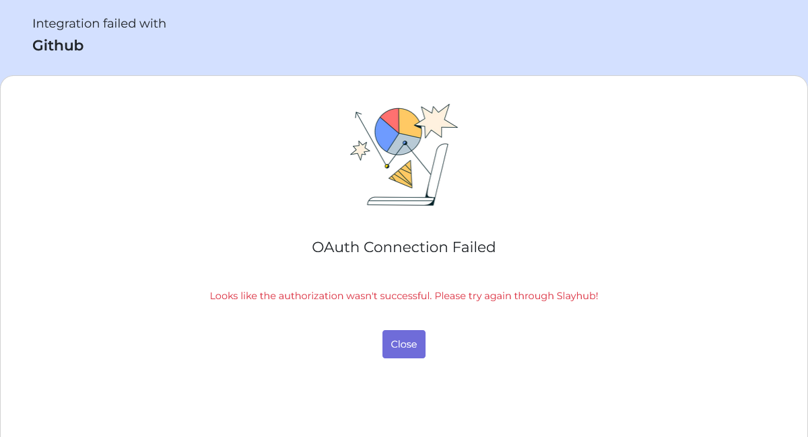
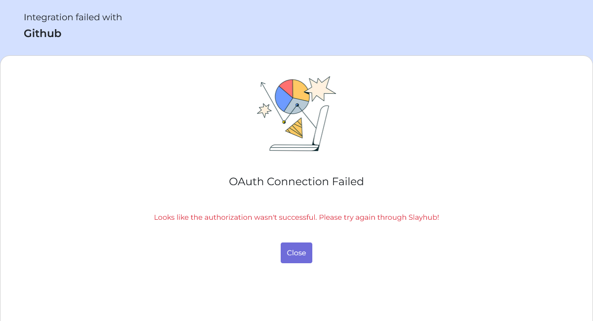
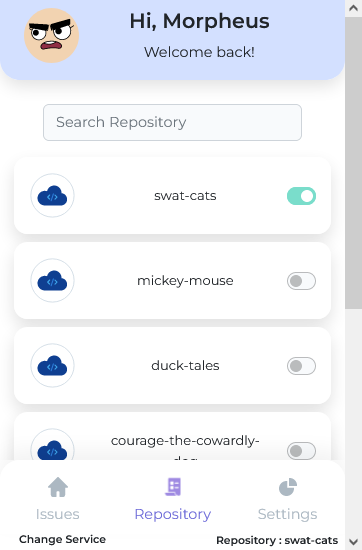
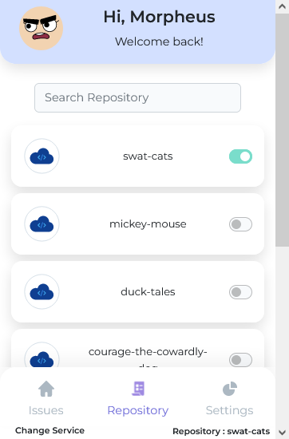
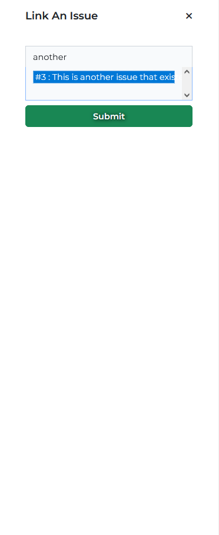
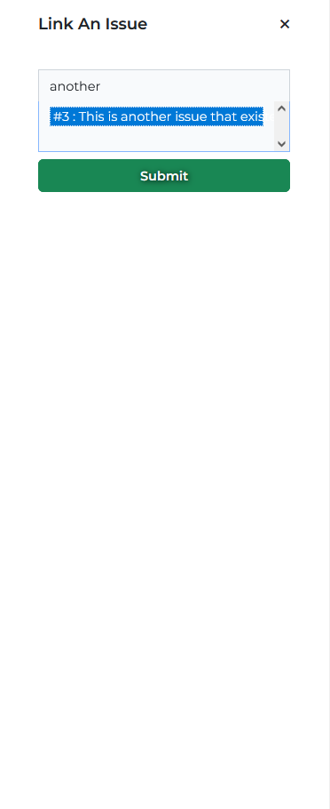
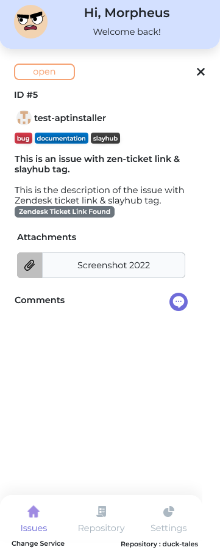
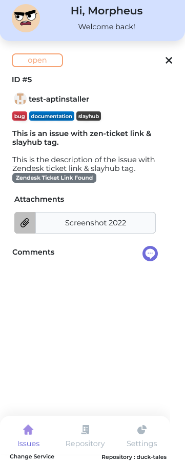

Getting Started
Welcome to Slayhub! We would like to thank you for choosing our product - Slayhub.
Welcome to Slayhub! We would like to thank you for choosing our product - Slayhub.
The GitHubor AzureDevops OAuth user token is used by SlayHub to perform all of the needed actions within GitHub on your behalf.
It uses the OAuth token to perform actions that are listed below.
Using OAuth, it'll retrive the list of all the organization or individual repositories based on the permissions allowed by the user during authorization.
Using OAuth, it'll be able to add and list issues of the repository associated with the active ticket and will be able to check status, labels & comments of the issue.
Webhooks are event driven APIs used to do realtime updations in SlayHub, The application subscribes only to the necessary events that are required by it to deliver you all its functionalities.
Click here to see the Webhook in action!Slayhub has two service modes that connects the Zendesk to AzureDevops and Github.
This allows users to integrate Zendesk with one or both at the same time through OAuth Token generated in the authorization process while setting up the application.
Hence without providing appropriate permissions, Slayhub won't be able to perform any of its functions.
Once Slayhub is done integrated you get to pick your service.
Once you select the desired service, a pop-up tab takes you to the authorization screen. Please read through the required permissions carefully and if you consent click on the Authorize Button.
see the image below.
If you chose Github as your version control,You should be redirected to the github page for authentication. If you have an active account it would request access, otherwise, it would request you to login. If you want Slayhub to fetch Organization Repositories then click on the 'Request or Grant' button based who the owns the organization. Once you have added every organization that you wanted click on Authorize Slayhub to continue.
.png)
If you chose Azure as your version control, you should be redirected to the azure page for authorization. If you have an active account it would request access, otherwise, it would request you to login. Click on accept to continue.
Note : Due to some limitations in Azure's Token permissions, you cannot access private repositories, unless you manually configure it to be accessible through the application.
Irrespective of the service you chose, On completing authorization, you'll be redirected back to the post-authorization screen, if you've successfully completed the authorization process you'll see the success screen from which you can continue using the application else you'll see the failed integration screen in this case you have to redo the integration process.
If the authorization was successful you can click on the proceed button, this will close the popup window, after that you can go to the application and click on the service you just completed the authorization for.
.png)  Import Demo Data">
 Import Demo Data">
If the setup process completed successfully, then you should see the issues tab open and the application is ready to use.
.png)
With Slayhub you can change the linked repository seamlessly.
Select the repository button to switch to the repository tab, once you are the in the repository tab you can search for the repository using the search bar at the top, once you found the repository that you want, click on the switch next to the repository name.
This switch usually takes a few seconds after it loads all the necessary data, you should see the switch active on the selected repository and the active repository name can be seen on the bottom-right corner of the application.
That's it! you have successfully linked a repository to the Zendesk ticket.
With Slayhub you can switch between repository with ease, as long as you have the required permissions. (Refer to the permissions section in settings).
.png) 


If not in the issues tab, navigate there and click on the Create Issue button.
You should see a form titled 'Add New Issue', if so then start filling the form with the required data and click on Create Issue when done.

Mandatory fields : Everything except Description are mandatory fields.
Attachments : you can only add files as attachments that exist in the current Zendesk Ticket's conversation thread. If you don't have any attachable files present in the ticket conversation you won't have the option to add attachments in the 'Create Issue' form.
It would take a second to submit, the status of the process can be seen on the submit button. Once its done submitting the form will close and you'll be taken to the issues tab again, where you can see the created issue listed over there.
Can't find the 'Add Attachments' option?


A submitted issue can be further explored by clicking the view button next to the issue subject.
An explored issue shows the status, labels, assignees and everything associated to the issue.


To link an issue that already exist on your version control, to your current Zendesk ticket, you must first navigate to the 'Issues' tab, and click on 'Link Issue' button to open the link issue form.

Once you have the link issue form open, you can search for the issue that you are looking for. Once you found the issue to be linked click on the issue (should see a highlight in blue on the selected issue), click on the submit button.
The linking process should start once you clicked submit, the application starts to request the data from your version control and it also sync all the comment with the linking (#client) tag.
 

If the linking process was successful you should see a successfully linked message and the link form would close and take you back to the issues tab where you should see the linked issue listed.
The linked issue can be explored just like a created issue, and if the issue had comments with the linking (#client) tag, you should see it listed under the comments section when you view the linked issue.


To comment on a linked or created issue, you must first navigate to the issues tab, click on the view button next to the issue subject that you want to comment on, scroll to the comments section and click on the purple chat bubble button on the right side of the comments heading.
Clicking on the chat bubble should open the comment form.
On clicking submit Slayhub would add a 'Submitted By : user' to the end of your typed message. (Don't be alarmed, this is done so that the users from the version control end can identify who the comment was from)

If it submitted successfully you should see your message listed under comments in Slayhub Purple, along with your commenting user's name and the timestamp of the comment.


We don't want our support agents to be confused by the list of tech mumbo jumbo conversations that the developer's have on their version controls.
So instead of synchronizing every single comment on issue, Slayhub lets the developers add a #client or #Client tag to their comments if its intended for the support staff.
If Slayhub sees a comment that's sent over through the Webhook that contains the #client or #Client tag it adds the comment to the specific issue else it would just ignore the comment as a whole.
Slayhub keeps track of who commented and when, also it identifies whether the comment is from Slayhub or if it was added by the developers onto the version control.
It basically has two user types agents and developers.
Agent messages would be shown in Slayhub Purple with the agent tag along side their names and Developers messages would be shown in Slayhub Grey with the developer tag along side the username of the developer who commented on the issue.


While creating an issue in Azure Service, due to some limitations, we can't add multiple labels or assign the issue to multiple developers at the same time.
Settings applies to all the tickets, that exist and the ones created in future across the service.
Navigate to the settings tab by clicking on the Settings Tab button.
Permissions can be used to give or restrict access to your agents, permissions mainly have four options to choose from.
Administrator : This lets your agents have full control over the application.

.png)
Standard: Everything except Repository and Settings are available to your agents.


Restricted : The agents can only comment on issues that exist in Slayhub.

View Only : Agents can only view your issues.


Options are used to customize the data that Slayhub sends to your version control.
It helps you with some utility that makes working with Zendesk and your version control easier.

Attach Zendesk ticket link to the issue : Adds a hyperlink along with the description that points to the ticket on zendesk.
Add slayhub tag to all the issues : This option adds the slayhub tag/label to the raised issue it works out of the box for Github.
For Azure : You need to manually create the tag in the repository that you would like to use the tag for else the issue would be created without a Slayhub tag.
 

Enable shortcuts to collect details from Zendesk : Adds the 'Quick Fill' buttons in 'Create Issue' form.
Ticket subject : Pushes the 'Ticket subject' data into the 'Issue Subject' while adding a new issue.
For description quick fills, the content get replaced with ticket information. you can add additional text through the additional text field that shows up once you have a quick fill active.
Ticket description : Pushes the 'Ticket Description' into the 'Issue Description' field in the form.
Ticket last message : Pushes the last message in the Zendesk's Ticket Conversation into the 'Issue Description' field.
Ticket full thread : Pushes the entire conversation in the Zendesk's Ticket into the 'Issue Description' field as a 'Conversation Thread'.
Clear quick fill : Clears all the active quick fill.


Zoom the app view : Increase the app window height.
Default repository option is used to set a repository that would be activated before-hand for all the Tickets on Zendesk, which includes the tickets that would be created in the future.
However, if a ticket has an active repository, the default repository directive is ignored.
Users can still change the linked repository associated with a ticket by navigating to the repository tab and changing the repository manually.


Slayhub only lets you attach files that exist on Zendesk, so if you can't find the 'Add Attachments' in the 'Create Issue' form its because there are no attachments in the conversation thread of the active ticket.
If an attachment exist, as shown in the above image, you get the option to add it as an attachment that would generate a token-based link that would let the developers at the version control's end to view the attachments without logging into Zendesk.
Tip : You can add links in description of your issue! (or under additional points incase you are using quick fill).
Slayhub utilizes your version control's Webhook to handle events, does a relevancy check and pushes the updates to Slayhub in real-time!
- Changes in the subject and description of the issue / work item.
- Changes in the labels and assignee data.

- Comments with linking (#client) tag.
- Changes in the status of the issue / work item.